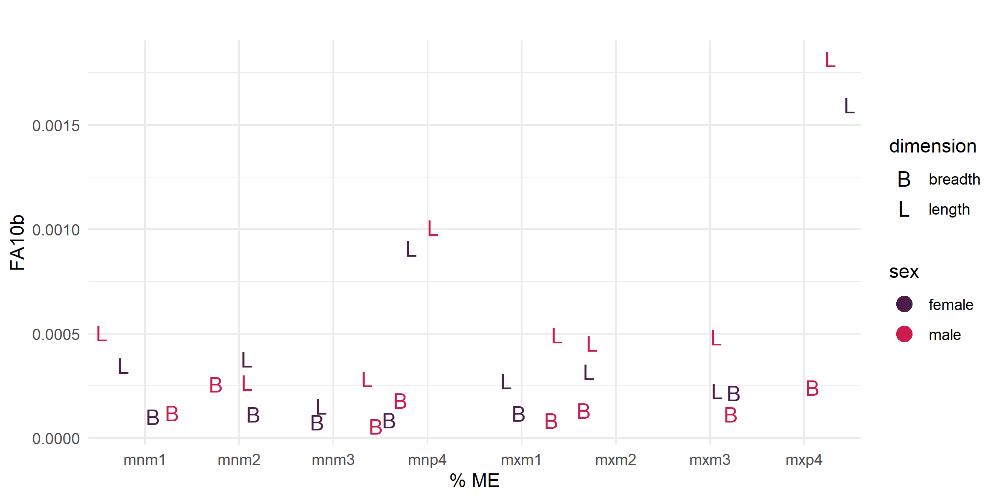
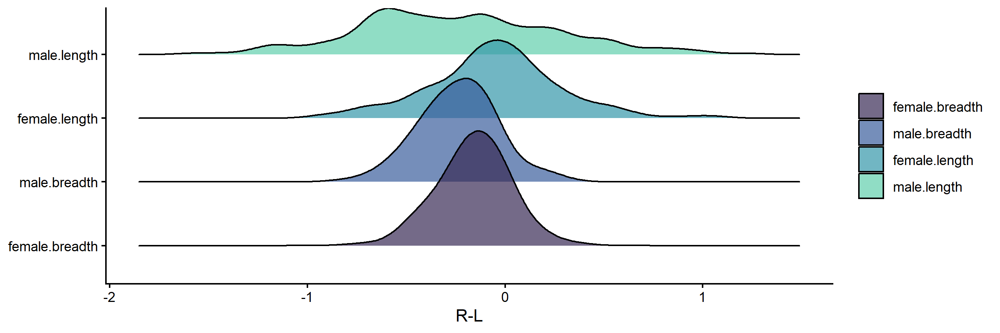
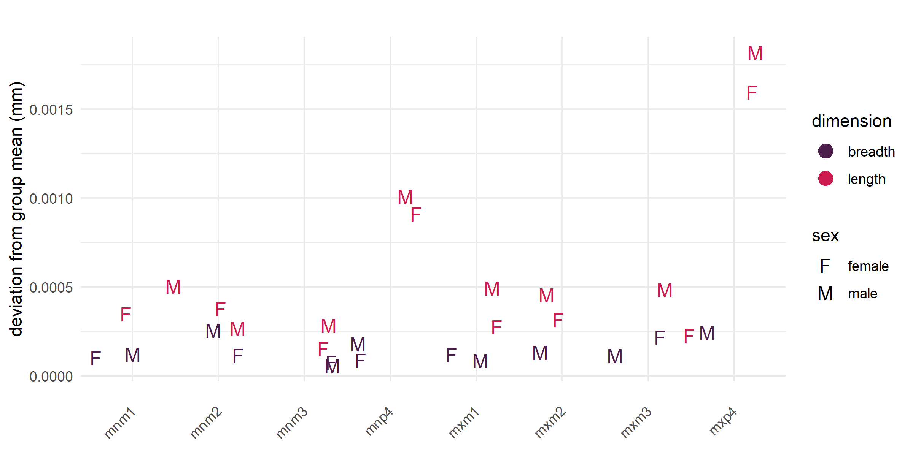
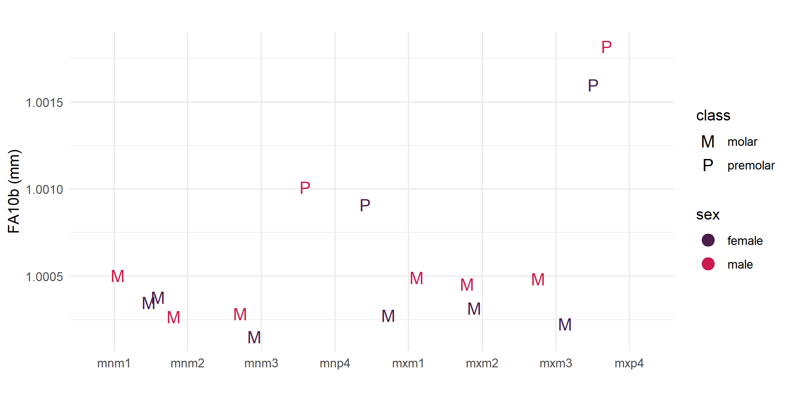
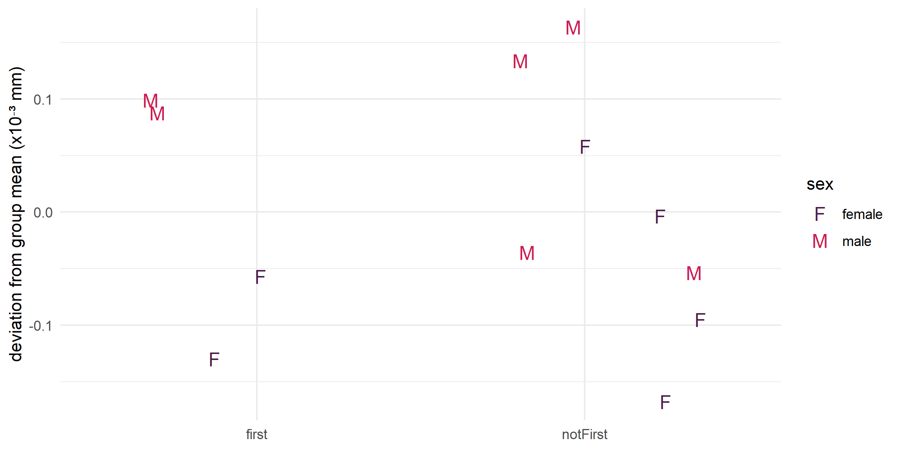
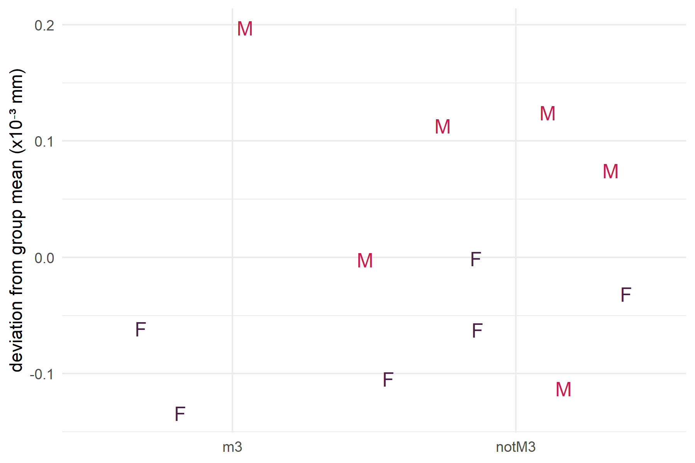
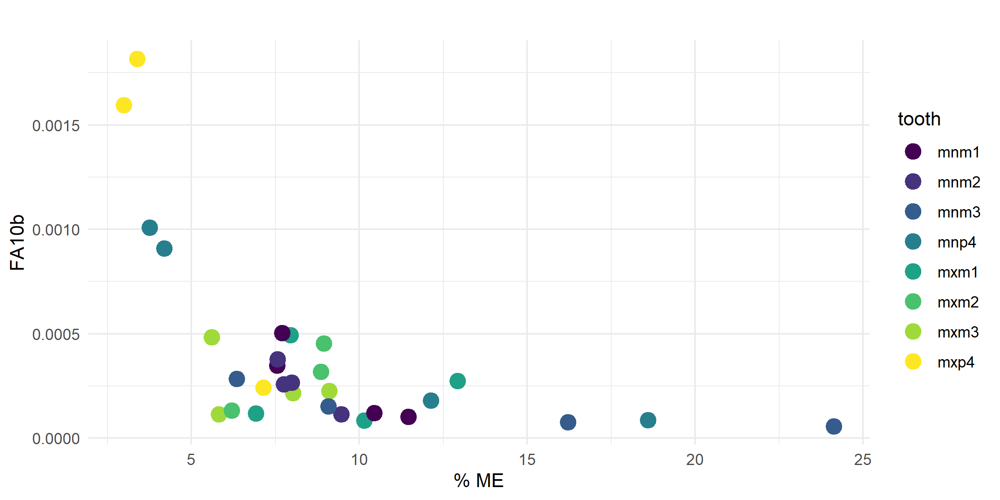

Developmental Instability in Wild Nigerian Olive Baboons (Papio anubis)
Executive Summary
Problem: Developmental instability – the failure of an organism to buffer its growth against genetic and environmental stressors – leaves permanent records in hard tissues. Dental fluctuating asymmetry (FA) is an established proxy for this instability, but data on non-human primates are sparse and rarely examine sex-based differences or life history phases. Baboons at Gashaka Gumti National Park (GGNP) in northeastern Nigeria represent an ecological outlier: they inhabit the wettest and most humid habitat of any studied baboon group, experience pronounced seasonal nutritional and thermoregulatory stress, and live in unusually small troops. This population offers a rare opportunity to examine FA in a wild primate under elevated environmental pressure.
Approach: We analyzed permanent dentition from a collection of 111 adult baboon skulls collected as a natural death sample at GGNP between 2008 and 2013. After excluding subadults, unprovenanced females, and specimens displaying extensive wear, damage, or a significant lack of antimeric teeth, an analytical sample of 81 individuals with antimeric tooth pairs remained. After excluding P3 due to its involvement in the canine honing complex, the final sample consisted of 36 adult males and 32 adult females. On the final variable set, we used the FA10b index – a ME-corrected, log-transformed measure of FA magnitude – to explore whether baboons show similar FA trends as found in human teeth and to test hypotheses about developmental stress using Levene’s test.
Insights: Baboon dental FA mirrors the human pattern: lengths carry greater developmental instability than breadths across all traits and both sexes, with breadths clustering near zero and contributing little discriminatory power. The biological signal is in the lengths, and premolar lengths are the highest of all – significantly greater than molar lengths in both sexes. This identifies the juvenile period between weaning and reproductive onset as the most developmentally demanding life history phase in this population, a finding not anticipated by the original hypotheses. Males trend toward higher FA10b than females across nearly all teeth, consistent with the harder and shorter lives of male baboons, though sample sizes preclude formal statistical testing at the individual tooth level. Neither weaning nor reproductive onset produces significantly elevated FA when premolars are excluded from the comparison for females but there is a trend towards higher FA at these times in males.
Significance: This study provides the first dental FA data for baboons and contributes to a growing comparative primate dataset needed to understand how sex, life history, and habitat shape developmental instability. The identification of the juvenile period – not weaning or reproductive onset – as the primary developmental stressor shifts attention to the poorly understood challenges of early independent life in baboons and raises questions about whether this pattern holds across populations with different ecological pressures. The finding that the sex difference is carried by lengths rather than overall FA magnitude has methodological implications: dimension-blind analyses may mask biologically meaningful signals in primate dental FA research. The GGNP population, as an extreme ecological outlier, offers a high-stress baseline for future comparative work. High ME variability across baboon teeth may also reflect unique morphological challenges in measurement that warrant attention in future cercopithecine FA research.
Key Findings
- The revised pipeline largely upholds the original paper findings; sex differences, previously found to be significant overall, are confirmed when testing by dimension and sex.
- Length measurements carry significantly greater FA than breadths across all traits and both sexes, mirroring the human dental FA pattern; breadths are uniformly low.
- Premolar lengths are significantly higher than molar lengths in both pooled and length-only tests, identifying the juvenile period between weaning and reproduction as the most developmentally demanding phase.
- Males trend toward higher FA10b than females across nearly all teeth, though sample sizes preclude formal testing at the individual tooth level.
- Neither weaning nor reproductive onset produces significantly elevated FA when the juvenile period (P4) is excluded from comparisons for females but males tend slightly higher.
Hoover, K.C., Gelipter, E., Sommer, V., & Kovarovic, K. (2021). Developmental instability in wild Nigerian olive baboons (Papio anubis). PeerJ, 9, e11832. DOI: 10.7717/peerj.11832
Research Questions
Did the changes to the pipeline undermine the paper findings?
Is there a pattern of sex differences in FA?
Is the juvenile period (P4) more stressful than other life history stages?
Is weaning more stressful than other life history stages when excluding P4?
Are there sex differences in FA during the onset of reproduction when excluding P4?
Research Answers
The revised pipeline replaced the original workflow with a fully R-based three-script pipeline with user checkpoints. The original wrangled data from field-collection sheets in Excel for input into R with manual removal of flagged replicates or variables and used the Excel-based Palmer and Strobeck (2005) mixed model ANOVA to generate FA10a values. The revised pipeline guards against copy/paste and sorting errors from the original Excel-based workflow. The revised pipeline also replaces Rosner’s ESD with Dixon’s test as per the Palmer and Strobeck protocol, and updates the calculation of skew and kurtosis to use side differences rather than averaged replicates. There was minimal impact to the major findings of the original paper other than fewer removals in Steps 1-5, which had the downstream effect of a significant trait size difference for one variable in Step 8 (handled by using FA10b, log transformation on raw measurements) and no variable exceeding the DA threshold in Step 9, allowing a larger analytical dataset to replicate the original findings and explore new ones.
Did the changes to the pipeline undermine the paper findings?
The original findings are largely upheld. See scripts-revised/ for the two scripts that compare paper data to revised data using the same analytical workflow, and see Study Design for a discussion of what changed in the data feeding into hypothesis testing. The original finding of overall sex differences did not replicate in the revised data, but sex differences are confirmed when testing by dimension and sex (Table 1). Human trends results were the same for dimension but with the addition of a new significant finding for class. Life history testing had the same result as the paper – no significant findings.
Baboon FA mirrors the human pattern: length FA10b values are significantly higher than breadth values, and premolar lengths are the highest values for both sexes and higher in males. Arcade (maxillary vs. mandibular) did not differ significantly.
| Test | F | df1 | df2 | p | sig |
|---|---|---|---|---|---|
| class | 39.09 | 1 | 28 | < 0.001 | * |
| arcade | 1.94 | 1 | 28 | 0.175 | |
| dimension | 14.38 | 1 | 28 | 0.001 | * |
Figure 1. FA10b by tooth dimension (breadth vs. length) across traits and sex.

Figure 2. Side difference (R-L) distributions by sex and dimension.

Interpretation: Breadth values exhibit ideal distributions for FA – tight, leptokurtic peaks centered on zero. Lengths exhibit longer tails indicating more extreme FA values, with male length showing the longest tails and most platykurtic distribution of the four groups.
Is there a pattern of sex differences in FA?
Elevated stress has been documented in GGNP females via fecal glucocorticoid but no comparable data exist for males. Male and female FA10b values overlap (Figure 3) but there is a slight trend for male values to be higher across nearly all teeth, suggesting that males experience greater developmental instability across the lifespan. FA10b is an index computed across all individuals per tooth, so sample sizes preclude formal statistical testing at the individual tooth level. For both sexes, premolar lengths are the highest values.
Figure 3. FA10b deviation from group mean by tooth and dimension, colored by sex.

Interpretation: Males trend to slightly higher FA10b in nearly all teeth, suggesting generally greater developmental instability across the lifespan. The social biology of male baboons supports this pattern – males leave their birth groups, establish themselves in a new dominance hierarchy through competitive and often violent interactions, face higher predation risk as solitary individuals during dispersal, and have developmental pathways that may be compromised by testosterone-linked immunosuppression and male-biased prenatal complications.
Is the juvenile period (P4) more stressful than other life history stages?
Given the pattern of higher FA10b in premolar lengths, we tested whether the juvenile period – the stage during which P4 develops, between weaning and reproductive onset – is more developmentally demanding than other life history stages. Premolar lengths are significantly higher than molar lengths in both pooled and length-only tests (Table 1). Figure 4 shows a clear separation between premolars and molars with no overlap at the upper end of the distribution.
Figure 4. FA10b by tooth position, showing premolar vs. molar lengths by sex.

Interpretation: Premolar lengths are substantially higher than molar lengths across both sexes, with male premolars showing the highest values. This pattern identifies the juvenile period between weaning and reproductive onset as the most developmentally demanding phase in this population – a finding not anticipated by the original hypotheses and one that redirects attention from the life history transitions themselves toward the sustained challenges of early independent life.
Are there sex differences in FA during weaning when excluding P4?
First molars develop during the weaning window (suckling ceases ~15 months; M1 erupts ~19.5 months), making them an excellent proxy for weaning stress. When premolars are excluded from the comparison, there are no significant differences in FA between M1 and other molar teeth, in either the pooled or length-only test (Table 1). Figure 5 suggests that males may experience greater stress during weaning than females, as evidenced by higher FA10b values for first molars, but this trend does not reach significance.
Figure 5. FA10b deviation from group mean comparing first molar to other molar teeth (excluding P4).

Interpretation: Weaning is not a uniquely stressful period relative to other molar life history stages. Males trend slightly higher than females during this period, consistent with the broader pattern of male developmental instability, but the difference is not significant.
Are there sex differences in FA during the onset of reproduction when excluding P4?
Menarche (~4.3 years) and first reproduction (~6.1 years) both precede third molar eruption (~6.8 years), making M3 a proxy for reproductive stress. When premolars are excluded from the comparison, there are no significant differences in FA between M3 and other molar teeth, in either the pooled or length-only test (Table 1). Figure 6 suggests that males may experience greater stress during the reproductive period, evidenced by higher FA10b values for third molars, but this trend does not reach significance.
Figure 6. FA10b deviation from group mean comparing third molar to other molar teeth (excluding P4).

Interpretation: Reproductive onset is not a uniquely stressful period relative to other molar life history stages. Males trend slightly higher than females, mirroring the weaning pattern, but the difference is not significant. The symmetric non-significant results for weaning and reproduction, combined with the significant premolar finding, consistently point to the juvenile period rather than either life history transition as the primary developmental stressor.
Study Design
Table 1. Results of Levene’s Tests.
| Hypothesis | df1 | df2 | F | p | sig |
|---|---|---|---|---|---|
| Premolar > FA (pooled) | 1 | 28 | 39.09 | < 0.001 | * |
| Weaning (pooled) | 1 | 21 | 1.78 | 0.196 | |
| Reproduction (pooled) | 1 | 21 | 0.37 | 0.547 | |
| Premolar > FA (lengths only) | 1 | 14 | 48.70 | < 0.001 | * |
| Weaning (lengths only) | 1 | 10 | 0.02 | 0.891 | |
| Reproduction (lengths only) | 1 | 10 | 0.32 | 0.585 |
Data Source: Natural death sample of olive baboon (Papio anubis) skulls collected at Gashaka Gumti National Park (GGNP), northeastern Nigeria, between 2008 and 2013 by the Gashaka Primate Project. Skulls were delivered by local residents and park rangers; specimens with evidence of human-caused death were excluded. Weathering stages (0–2) indicate deposition over approximately six years.
Data Handling: Age was assessed by tooth developmental stage and basilar suture development; sex was assessed visually by skull morphology. Standard maximum length and breadth measurements were taken 10 times on permanent mandibular and maxillary premolar and molar teeth (excluding the maxillary third premolar due to canine honing). The final dataset included up to nine variables per individual. All measurements were screened for: (1) measurement error (ME), assessed across replicate sets using the ME3 formula; (2) directional asymmetry (DA), identified by significant skew; (3) antisymmetry, identified by platykurtic or bimodal distributions; and (4) trait size dependency, tested by correlation between mean trait size and mean side difference. All pipeline decisions are documented in the scripts. The revised pipeline retained more variables than the original published analysis due to the replacement of Rosner’s ESD with Dixon’s test and the correction of the skew and kurtosis calculations.
Analytical Approach:
- Assessed ME across all ten replicate sets; selected the full set of 10 replicates (lowest mean ME, 8%) for analysis.
- Screened all variables for DA, antisymmetry, outliers, and trait size dependency; eliminated variables that failed screening.
- Calculated FA10b index (log-transformed FA10a) for all retained variables by sex and tooth position; Figure 7 shows FA10b plotted against percent ME to illustrate the value of ME correction.
- Explored FA trends across dimension (length vs. breadth), tooth class, and arcade using Levene’s test, pooled and by sex.
- Tested sex differences in FA using Levene’s test with a sex-by-dimension interaction (FA10b ~ sex * dimension).
- Tested whether premolar lengths are significantly higher than molar lengths (Levene’s test: FA10b ~ class) on lengths only and pooled.
- Tested weaning stress using Levene’s test on M1 vs. all other molar teeth (premolars excluded), pooled and lengths only.
- Tested reproductive stress using Levene’s test on M3 vs. all other molar teeth (premolars excluded), pooled and lengths only.
Figure 7. FA10b plotted against percent ME by tooth, showing the effect of ME correction on the FA signal.

Project Resources
Repository:
Data:
- Dental measurement data collected by Emily Gelipter at the Gashaka Primate Project research station, GGNP, Nigeria; included in repo.
Code:
revised1-wrangling.R– converts raw Excel replicate sheets to pipeline-ready long-format CSVrevised2-inspection.R– data inspection: ME assessment, outlier removal, DA and antisymmetry tests, trait size dependencyrevised3-analysis.R– FA10b calculation, hypothesis testing, life history comparisons, and figure generation
Project Artifacts:
- Figures (n=7): side difference distributions, FA10b by dimension, sex differences, juvenile period (P4), weaning, reproduction, FA10b vs. percent ME
2021-hoover_et_al-developmental_instability_in_wild_Nigerian_olive_baboons.pdf– open-access published paper (CC BY 4.0)
Environment:
renv.lockandrenv/– restore withrenv::restore()
License:
Code and scripts © Kara C. Hoover, licensed under the MIT License.
Data, figures, and written content © Kara C. Hoover, licensed under CC BY-NC-ND 4.0.
Tools & Technologies
Languages | R
Tools | RStudio | GitHub
Packages | dplyr | tidyr | readr | readxl | openxlsx | ggplot2 | ggridges | gridExtra | cowplot | plotly | htmlwidgets | car | outliers | DescTools | Hmisc | coin
Expertise
Domain Expertise: biological anthropology | primatology | bioarchaeology | developmental stress | life history theory | fluctuating asymmetry
Transferable Expertise: Demonstrates the application of variance-based statistical methods to biological signal extraction in noisy field data, including systematic measurement error assessment and multi-stage data quality screening – skills applicable wherever measurement reliability and signal integrity are critical.